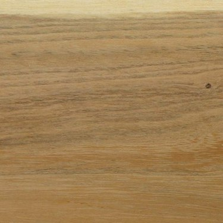

Akác

Kedvelt mezőgazdasági szerfa. Kiváló tűzifa. Alkalmas bányafának, vezetékoszlopnak, a járműgyártásban, hajóépítésben is bevált. Újabban boroshordó készítésére is használják, bútoripari használata felfutóban van.
A Közép-Európában termesztett fafajok közül az akácnak vannak a legjobb szilárdsági és rugalmassági jellemzői.
Az akác anyagának nedvességtartalma kivágáskor 30…50 százalék közötti, amely jóval alacsonyabb, mint a legtöbb fáé, ezért szárítás nélkül is tüzelhető. A légszáraz akácfa (15…20% nedvességtartalom) köbmétere 7…800 kilogramm,
míg friss kitermelésnél 930…950 kg/m³-rel lehet számolni. Az akácfa nehezen gyullad, az ehhez szükséges minimális hősugárzási intenzitás értéke 2,6 W/cm². Tűzállóságát tekintve az épületfaként hasznosított akác 0,5 mm/perc beégési sebességgel rendelkezik.
Gyors növésű, 30…40 évesen már kitermelhető. Véghasználati faproduktuma 80 és 400 m³ közötti. Jó növekedésű akácállományok faanyagtermő képessége 12 m³/Ha/év is lehet.
- Szárítás
- Szárításkor könnyen reped, ezért kíméletesen kell szárítani. Szárítás közben nem vetemedik, nem teknősödik.
- Megmunkálás
- Keménysége miatt nehezen faragható, forgácsolható, csiszolható. A szerszáméleket mérsékelten tompítja. Jól esztergálható, gőzölve jól hajlítható.
- Rögzítés
- Rosszul szegezhető, csavarozható. Általában jól ragasztható hidegen és melegen is. A meleg ragasztás élénkvörös foltosodást okozhat. Nehézséget okozhat az akácnak tölggyel vagy cserrel való ragasztása.
- Felületkezelés
- Jól és tartósan pácolható, lakkozható.
- Tartósság
- Igen jó, szabadban kb. 80 év, vízben kb. 500 év, állandóan szárazon kb. 1500 év.
| Tulajdonság | Érték |
|---|---|
| Rönkhossz | 3 - 10 m |
| Rönkátmérő | 0.3 - 0.8 m |
| Sűrűség | 0.75 g/cm3 |
| Zsugorodás sugárirányban | 4.4% |
| Zsugorodás húrirányban | 6.9% |